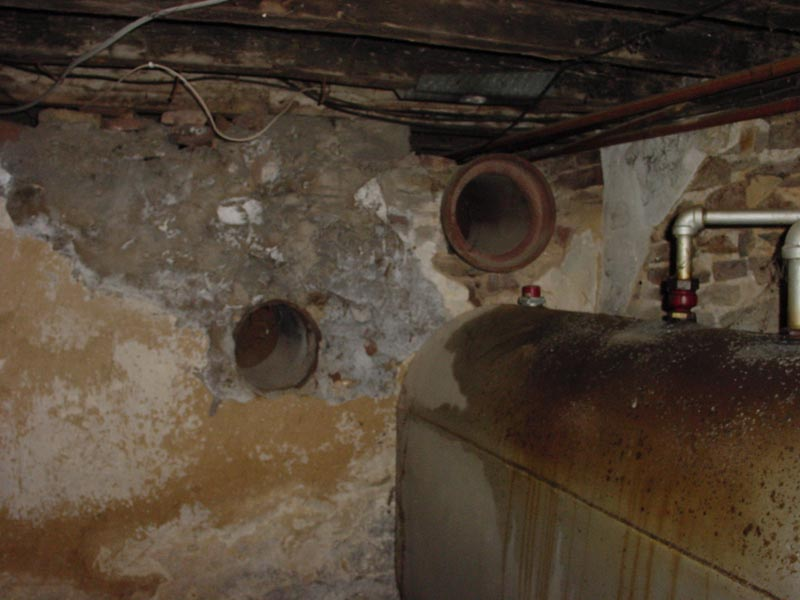

|  |
Glacing to the left, you see what is probably most perplexing item in the basement. Two large, exposed pipes are in the dividing wall between the greater and lesser halls. (their view is blocked by the workbench in the Great Hall) They are nearly 16 inches wide and there are two of them. They have been sawed off flush with the wall. What kind of service would require pipes this large and at chest level? It is the great mystery of the lesser hall. [ Back ] |